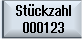
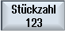
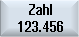

| 4. | Drücken Sie den Softkey "Sonderzeichen", wenn Sie ein Zeichen benötigen, das nicht auf den Eingabetasten vorhanden ist. Das Fenster "Sonderzeichen" wird geöffnet. Das angewählte Zeichen wird an der Cursorposition in den Text eingefügt. |
| | 5. | Drücken Sie nacheinander die Softkeys "Text löschen" und "Löschen", wenn Sie den gesamten Text löschen möchten. |
 | | |
| | 6. | Drücken Sie den Softkey "Kleinschrift", wenn Sie Kleinbuchstaben eingeben möchten. Bei nochmaligem Drücken können Sie wieder Großbuchstaben eingeben. |
| | 7. | Drücken Sie die Softkeys "Variable" und "Datum", wenn Sie jeweils das aktuelle Datum gravieren möchten. |
| | | Das Datum wird im europäischen Format (<DD>.<MM>.<YYYY>) eingefügt. Um eine andere Schreibweise zu erhalten, müssen Sie das im Textfeld vorgegebene Format entsprechend anpassen. Damit das Datum z.B. in amerikanischer Schreibweise (Monat/Tag/Jahr => 8/16/04) graviert wird, ändern Sie das Format in <M>/<D>/<YY> . |
| | 7. | Drücken Sie die Softkeys "Variable" und "Uhrzeit", wenn Sie jeweils die aktuelle Uhrzeit gravieren möchten. |
| | | Die Uhrzeit wird im europäischen Format (<TIME24>) eingefügt. Um die Uhrzeit in amerikanischer Schreibweise zu erhalten, ändern Sie das Format in <TIME12>. Beispiel: Texteingabe: Zeit: <TIME24> Ausführung: Zeit: 16.35 Zeit: <TIME12> Ausführung: Zeit: 04.35 PM |
| | 7. | Drücken Sie die Softkeys "Variable" und "Stückzahl 000123", wenn Sie eine Stückzahl mit einer festen Stellenzahl und mit führenden Nullen gravieren möchten. Der Formattext <######,_$AC_ACTUAL_PARTS> wird eingefügt und Sie kehren zum Gravurfeld mit der Softkeyleiste zurück.
|
|  | | Legen Sie die Stellenzahl fest, indem Sie die Zahl der Platzhalter (#) im Gravurfeld anpassen. Sollte die angegebene Stellenzahl (z.B. ## ) zur Darstellung der Stückzahl nicht ausreichen, erhöht der Zyklus die erforderliche Stellenzahl automatisch.
|
| | | -ODER |
| | 7. | Drücken Sie die Softkeys "Variable" und "Stückzahl 123", wenn Sie eine Stückzahl ohne führende Nullen gravieren möchten. Der Formattext <#,_$AC_ACTUAL_PARTS> wird eingefügt und Sie kehren zum Gravurfeld mit der Softkeyleiste zurück.
|
|  | | Legen Sie die Stellenzahl fest, indem Sie die Zahl der Platzhalter im Gravurfeld anpassen. Sollte die angegebene Stellenzahl zur Darstellung der Stückzahl (z.B. 123) nicht ausreichen, erhöht der Zyklus die erforderliche Stellenzahl automatisch.
|
| | 7. | Drücken Sie die Softkeys "Variable" und "Zahl 123.456", wenn Sie eine beliebige Zahl in einem bestimmten Format gravieren möchten. Der Formattext <#.###,_VAR_NUM> wird eingefügt und Sie kehren zum Gravurfeld mit der Softkeyleiste zurück.
|
|  | | Legen Sie mit Hilfe der Platzhalter #.### fest, in welchem Stellenformat die unter _VAR_NUM definierte Zahl graviert werden soll. Haben Sie unter _VAR_NUM beispielsweise 12.35 hinterlegt, haben Sie folgende Möglichkeiten, die Variable zu formatieren.
|
| | | Eingabe | Ausgabe | Bedeutung |
| | | <#,_VAR_NUM> | 12 | Vorkommastellen nicht formatiert, keine Nachkommastellen |
| | | <####,_VAR_NUM> | 0012 | 4 Vorkommastellen, führende Nullen, keine Nachkommastellen |
| | | < #,_VAR_NUM> | 12 | 4 Vorkommastellen, führende Leerzeichen, keine Nachkommastellen |
| | | <#.,_VAR_NUM> | 12.35 | Vor- und Nachkommastellen nicht formatiert |
| | | <#.#,_VAR_NUM> | 12.4 | Vorkommastellen nicht formatiert,
1 Nachkommastelle (gerundet) |
| | | <#.##,_VAR_NUM> | 12.35 | Vorkommastellen nicht formatiert,
2 Nachkommastellen (gerundet) |
| | | <#.####,_VAR_NUM> | 12.3500 | Vorkommastellen nicht formatiert,
4 Nachkommastellen (gerundet) |
| | | Sollte der Platz vor dem Dezimalpunkt zur Darstellung der eingegebenen Zahl nicht ausreichend sein, wird er automatisch erweitert. Ist die angegebene Stellenzahl größer als die zu gravierende Zahl, dann wird das Ausgabeformat automatisch mit der entsprechenden Anzahl vor- und nachlaufender Nullen aufgefüllt. Zum Formatieren vor dem Dezimalpunkt können Sie auch wahlweise Leerzeichen verwenden. Sie können statt _VAR_NUM auch eine beliebige andere Zahlenvariable verwenden (z.B. R0). |
| | 7. | Drücken Sie die Softkeys "Variable" und "variabler Text", wenn Sie den zu gravierenden Text (max. 200 Zeichen) aus einer Variablen übernehmen möchten. |
| | | Der Formattext <Text, _VAR_TEXT> wird eingefügt und Sie kehren zum Gravurfeld mit der Softkeyleiste zurück. Sie können statt _VAR_TEXT auch eine beliebige andere Textvariable verwenden. |